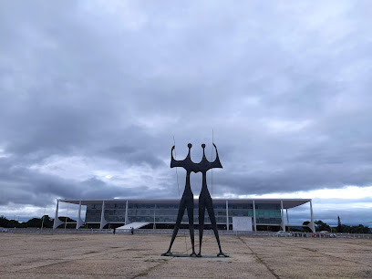
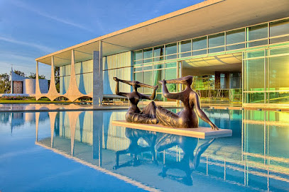
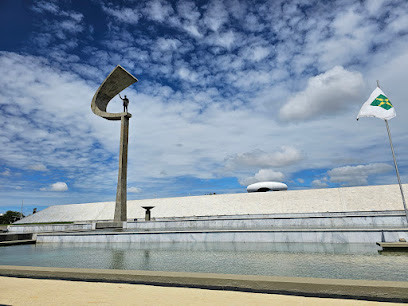
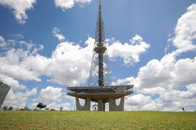
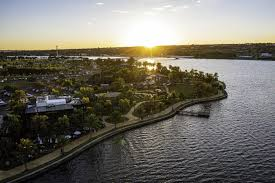
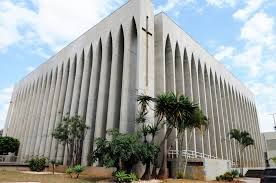
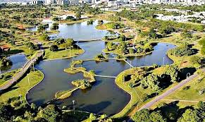

🎉 ANIVERSARIO DO QUADRADINHO(Brasilia) 🥳
Home
Visitar
Eventos
Governadores
Lugares Para Visitar em Brasília
Praça dos Três Poderes

Palacio da Alvorada

Memorial JK

Esplanada dos Ministérios
Palácio do Itamaraty
Torre de TV

Pontão Lago Sul

Santuário Dom Bosco

Parque da Cidade
